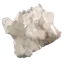
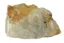
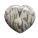

Correspondence Grimoire
 Water
Water

Celadonite Phantom QuartzCelestiteChalcedony
Cryolite
Graphic Smoky Quartz in FeldsparGreen CalciteElemental Attributes
Water governs emotion and feeling, embodying a phlegmatic temperament characterized by nurturing and empathic qualities. Those drawn to Water are typically intuitive and compassionate, finding strength in emotional depth and connection.
Temperament: Phlegmatic
Function: Emotion
Attribute: Feeling, nurturing
Direction: West
Season: Autumn
Archangel: Gabriel
Elementals: Undines
Tarot Suit: Cups
Playing Card Suit: Hearts
Zodiac Signs: Cancer, Scorpio, Pisces
Active Colors: White, Blue
Passive Color: Black
Core Qualities: Compassion, Feelings, Tranquility
Associated Domains: Children, Emotions, Family, Friendships, Healing, Home, Intuition, Love, Reason
When to Work with Water: Use Water if you wish to dissolve or eliminate something.
Ancient Water Healing Practices
Since ancient times, people have gathered at sacred wells and reported seeing holy visions in streams and other bodies of water. According to an old European custom, dew gathered at dawn banishes illness, making it a good base for curative potions.
Traditional water healing spells include bathing in water from a sacred well, dipping your hands into the ocean three times and then pouring the water behind you so the sickness is likewise "behind" you, or releasing a token that represents your illness into the waves.
Water Personalities
People who have a lot of water energy in their makeup tend to be emotional, sensitive, intuitive, imaginative, and compassionate individuals. The water element embodies characteristics of nourishment, healing, purification (both physical and spiritual), intuition, emotion, and creativity.
Because the moon affects the tides, it has strong connections with the water element. Water energy is changeable and unpredictable. It can manifest as a gentle rain or a typhoon, making it effective for spells involving change or movement.
Working with Water
Tap into water energy for growth and abundance spells, or to nurture creativity. Purification spells and rituals draw heavily upon water-practitioners often take ritual baths before spellwork and wash magickal tools with water to purify them. The key when working with water is controlling the energy so you get just the right amount for your intention.
Water in Spell-casting
Water is the element most closely linked to magick itself. It is the origin point of life, not only in the Darwinian sense but in the most intimate way imaginable: every one of us begins life floating in amniotic fluid. It governs psychic perception and deep intuitive awareness.
Water is a feminine, yin force. Spells rooted in water take shape in the bath, along the shoreline, or beside any natural body of water. They make use of moon-blessed water, ritually prepared washes, and collected rain.
Water in Myth and Landscape
It is often said that the person you love is around 70 percent water, and the same is true of the planet, whose surface is more than 70 percent water as well. Few elements are woven so deeply into how we picture life, death, and the shape of the world.
The Formless Element
Water has no shape of its own. It is defined entirely by the solid things that surround it, and even when frozen it still borrows its form from its environment, down to the gravity that draws an icicle to a point. In The Sacred and the Profane, Mircea Eliade observes that form manifests itself above the waters by detaching itself from them. Water therefore stands for a mass of pure possibility. It is no surprise that so many creation stories begin with the Earth rising out of a primordial, whirling ocean from which all other life is born, or that our own evolution is told as amphibious creatures crawling out of the water onto dry land. The story of a great flood is just as universal, whether read as a natural disaster or an act of God, and for many faiths it became a washing away of sins on a world scale. Images of drowned cities like New Orleans remain a sober reminder of the devastation that water's huge, formless mass can unleash.
The Moon and the Feminine
The movements of the Moon and the planets govern the rise and fall of the tides, tying water to the wider rhythm of the elements. Each individual life first gestates in the watery environment of the womb, and here water joins itself to the feminine. Like the Moon, whose visible shape is set by something outside itself, the light of the constant Sun, water takes its form from what holds it.
Reflection and Rebirth
Baptism, sometimes a complete immersion, stands for rebirth and regeneration, a reminder that water gave birth to all life. Water also reflects. Some Native American traditions call a still pool a sky mirror, and in this sense water gave people their first way of seeing themselves as others saw them, deepening the bond with the mirroring Moon.
Rivers and the Flow of Time
Water answers to gravity, flowing always downward from the heights until it reaches the sea, and in this the river becomes a symbol of the linear movement of time. The flowing river carries with it the spirit of the mountains it springs from, offering an essential resource wherever it goes. Most of the world's great cities grew along the courses of rivers, and again and again both the river and the city it feeds are held to be sacred.
The Depths and Liminal Waters
The oceans are so deep that, for all our exploring, creatures still live there undetected, and even seemingly poisonous places such as deep hot water vents teem with life. Because the deep waters of sea and lake stand for unknown realms, fairy tales and myths set otherworldly spirits in them. Foggy, misty places, caught between the world of the living and the dead, are liminal grounds where the worlds blur into one another. The Elysian Fields, where Greek myth lays the souls of dead heroes to rest, may come from an Egyptian phrase meaning field of reeds, and Homer describes the asphodel and poplar growing there, both water-loving plants.
The Ganges
The Ganges is one of the world's holiest rivers, mythologized as the place where the Goddess Ganga, wife of Shiva and daughter of the mountain god Himalaya, came down to Earth. A king named Bhagiratha sought to save his ancestors, who had been burned to ashes after disturbing a holy man at his meditation. Ganga agreed to flow over their ashes and release their souls to Heaven, and to keep her crashing waters from shattering the Earth, Shiva caught the river in his hair. The scale of Ganga Ma, or Mother Ganges, adds to her importance to Hindus. She runs 2,507 kilometers from a source 4,200 meters up in the Himalayas to the Bay of Bengal, and she is the personification of the great Goddess spirit, Shakti, so that drinking her waters and bathing in them are sacred acts. The river is less a sacred place than a sacred being. One of the holiest sites along her course is Varanasi, where the union of sacred river and sacred city is called a Mokshadvara, a portal to liberation, a threshold where the veil between worlds is thinnest. To die in Varanasi is counted a privilege, and pilgrims travel there in their thousands to scatter the ashes of loved ones into the river from the stone steps known as ghats. Bathing is believed to cleanse the soul of old karmic burdens, which are carried out to sea along with offerings of flowers and floating candles.
The Styx and the Rivers of the Underworld
In Greek myth the Styx forms the border between Earth and the Underworld of Hades, a no-man's land belonging at once to both places and to neither, marking the crossing point between two worlds. That threshold role is often shared by water birds, which move through air, earth, and water alike and so serve as messengers between the gods and humankind, and between the living and the dead. The ferryman Charon carries souls across, and it is still a Greek custom to place a coin in the mouth of the dead as his payment. The Styx bears another name, Alpha, the first letter of the Greek alphabet and the one that gives birth to all that follow, continuing the image of the river as the Great Mother. The gods swore their gravest oaths upon it, and like a spiral it coils nine times around Hades. A single drop of its water was fatally poisonous, yet it could also grant invulnerability, which is why Thetis dipped her son Achilles in it, holding him by the heel that the water never touched, giving us the phrase an Achilles heel. Other rivers run through the Underworld too, notably the Lethe, the river of oblivion, whose waters made souls forget their past lives before rebirth, and the Mnemosyne, whose waters let the drinker carry the memory of a former life into the next. One of the secrets of the Eleusinian Mysteries was likely the counsel to refuse the Lethe and drink instead from the Mnemosyne.
The Ocean and the World Serpent
Our ancestors imagined the oceans as a great serpent coiled around the planet, an idea preserved in the cosmic egg, the Earth shown as an egg encircled by the serpent, and part of why serpent symbolism runs so deep. The vastness of the seas still recalls the formless mass that came before the Earth was born. Like the desert, the ocean is a place to cross rather than to dwell in, a boundary between the habitable parts of the world, and some of our most epic stories follow the voyagers who brave it, from Odysseus making his way home across the Mediterranean in Homer's Odyssey to Ellen MacArthur's solo voyage around the world, a vivid emblem of human endurance pitted against the elements. Just as the height of the mountains gives us the direction of above, the depths of the ocean give us below, and we still measure land as so many meters above sea level. The center of the Earth can be reached only by way of the sea, and it is telling that this fiery core is the place we link with Hell and its half-known monsters. This is why the Christian Devil carries the forked trident that once belonged to the sea gods Poseidon, Neptune to the Romans, and Vishnu, who move freely through those depths. In the film Forbidden Planet the most fearsome creatures of all are the Monsters of the Id that rise from the depths of the subconscious, one more image cast onto the fathomless sea.